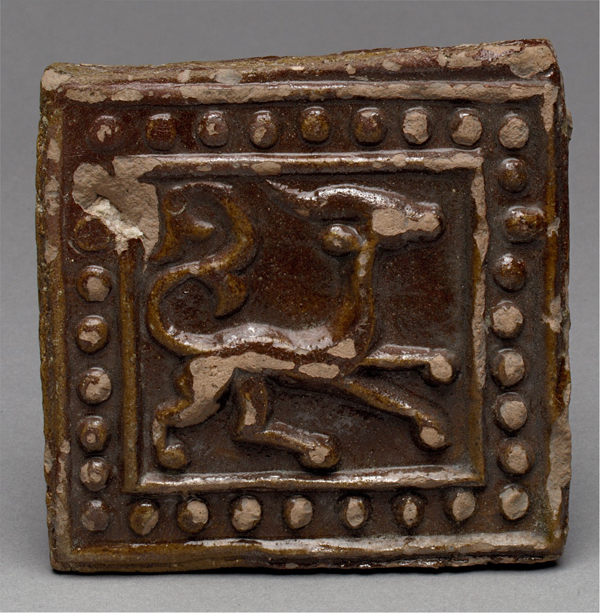
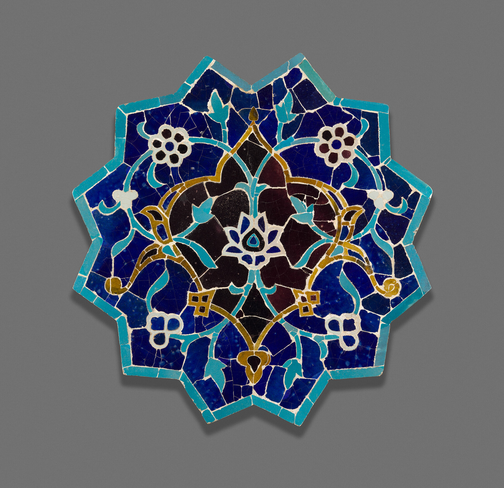
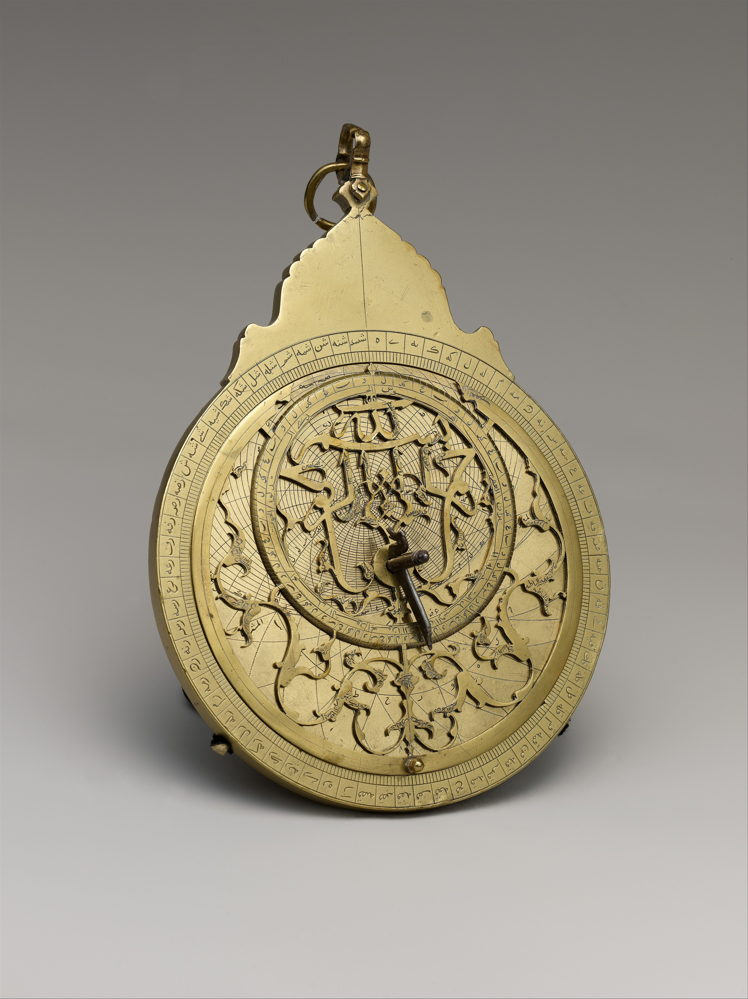

Weekly Learning
Qur'an & Islamic Studies
Classes in recitation, tajweed, and foundational Islamic knowledge for children and adults at our Farringdon Grove hub.
Daily congregational prayers at Farringdon Grove and Friday Jumu'ah at Rockchase Sport Centre.

Free community gathering with stalls, a bouncy castle and free registered parking. Children under 18 must be accompanied by a parent or guardian. Everyone is welcome.
Weekly Friday congregational prayers for Havering North.
Creative House, Bryant Ave, Romford RM3 0AP (directly opposite Tesco on Bryant Avenue).
There is strictly no parking on Bryant Avenue road. Please use the Tesco car park opposite and car-share if you can.
A dedicated, comfortable space is arranged for sisters every Friday.
Ablution facilities at the sports centre are limited. Please perform your wudu before leaving home.

Classes, study circles and community gatherings across Havering North.
Classes in recitation, tajweed, and foundational Islamic knowledge for children and adults at our Farringdon Grove hub.

A dedicated space for sisters to learn, reflect and connect in a supportive neighbourhood environment.

Open gatherings welcoming families, friends, and neighbours. Programmes announced regularly on WhatsApp.
Worship, education and practical pastoral care for Harold Hill, Romford and Havering North.
Daily five prayers in congregation at Unit 12 Farringdon Grove, and Friday Jumu'ah khutbah and salah at Rockchase Sport Centre.
Structured, patient learning for children and adults, from learning Arabic letters to fluent recitation and core understanding.
Support, companionship, and guidance for anyone who has embraced Islam or is exploring faith. No question is too basic.
Compassionate guidance, arrangement assistance, and bereavement support for families across the borough.
Regular study circles, social gatherings, youth sports, and family outings that build strong neighbourhood ties.
Confidential advice, signposting to local borough services, and practical neighbourhood assistance.

A community of Muslims in Havering North who come together to worship, learn and look after one another, with doors open to the wider neighbourhood.
Your regular standing orders sustain daily congregational prayers and secure a permanent home for generations to come.
Please use online banking or visit your branch to set up a standing order or one-off transfer.
Unit 12 Farringdon Grove, Harold Hill, Romford RM3 8TD
Everyone is welcome at prayer times. To arrange a visit outside congregational prayer times, please get in touch in advance.
Our WhatsApp group is the primary channel for daily notices, Friday Jumu'ah logistical updates, and community news.
The Farringdon Grove hub opens 20 minutes before each daily prayer and closes 15 minutes following congregation.
Friday Jumu'ah is held at Rockchase Sport Centre on Bryant Avenue (1:30 pm sharp).